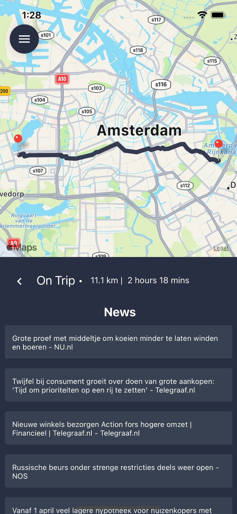
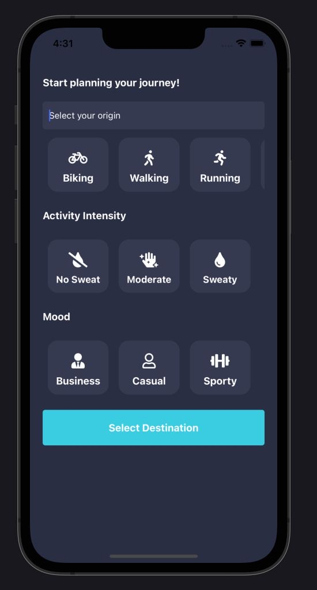
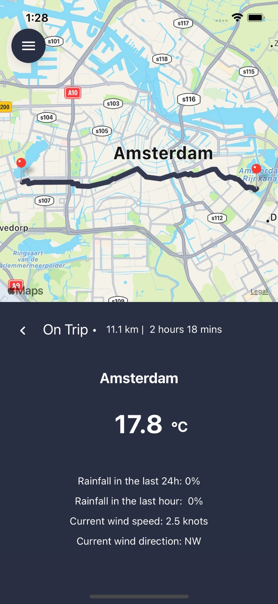
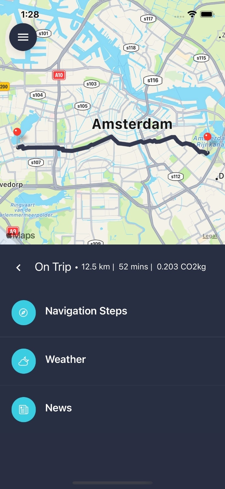

Context aware journey planner
Prototype iOS app that plans routes based on your activity type, desired intensity and mood, and then adds live weather and local news along the way.





Prototype iOS app that plans routes based on your activity type, desired intensity and mood, and then adds live weather and local news along the way.



